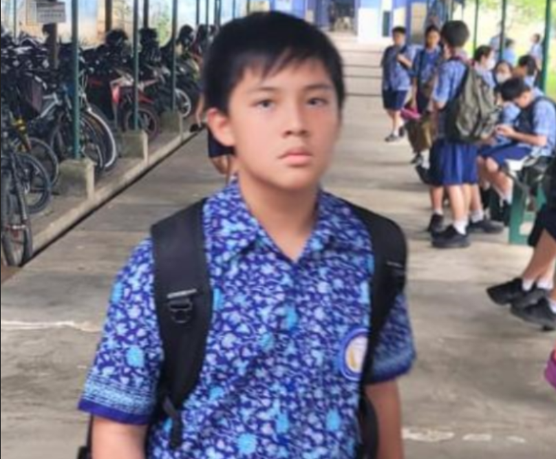
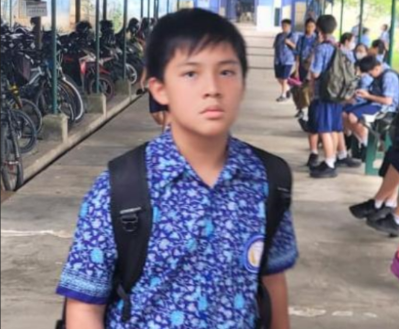
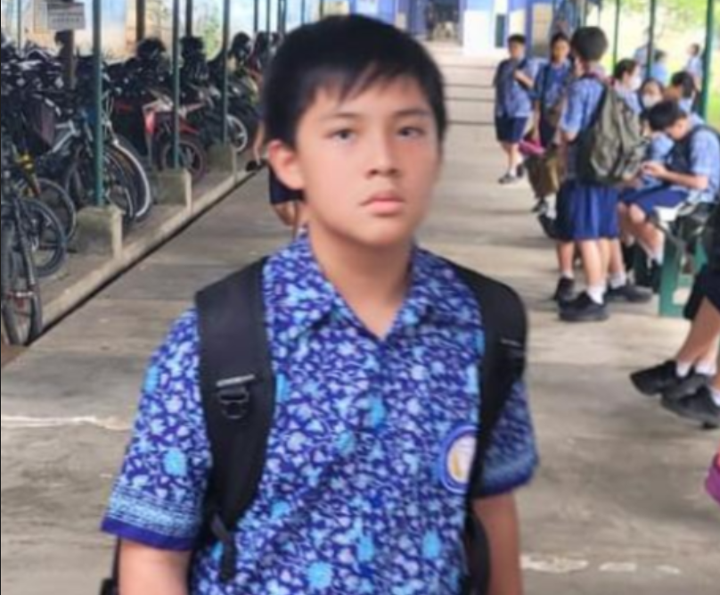
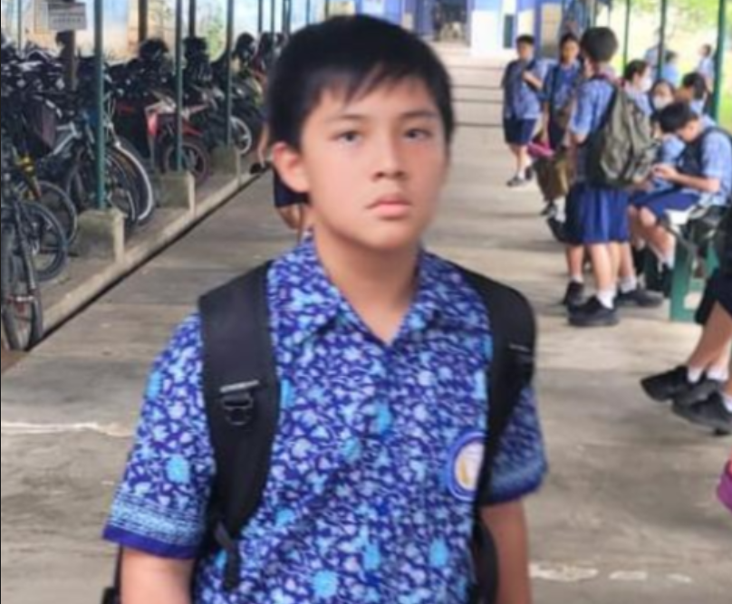
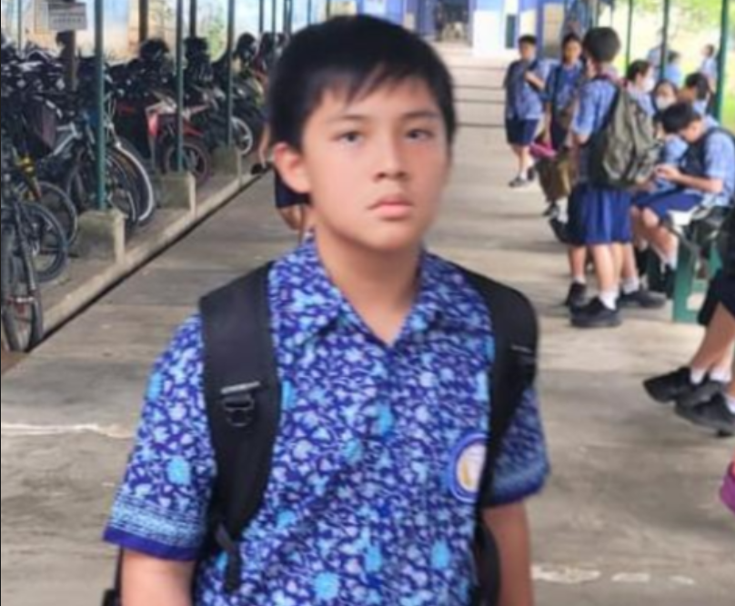

Home
Soegondo
Yamin
Djoko
Student Biography

Name
Kelas
No. Absen
Sean Patrick Lukman
8B
26
Amadeus Darren Indrawan
8B
01
Deskripsi Diri
Amadeus Darren Indrawan:
Age: 13, Born: Gading Serpong
Sean Patrick Lukman:
Age: 13, Born: Jakarta
 


